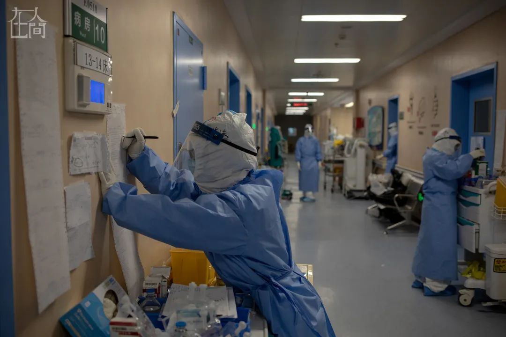
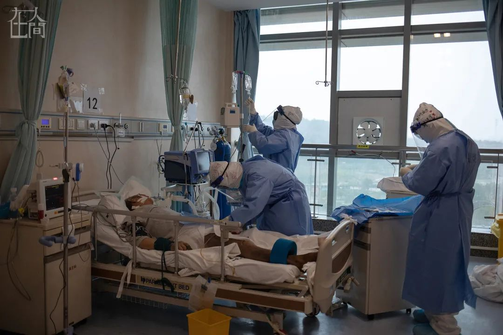
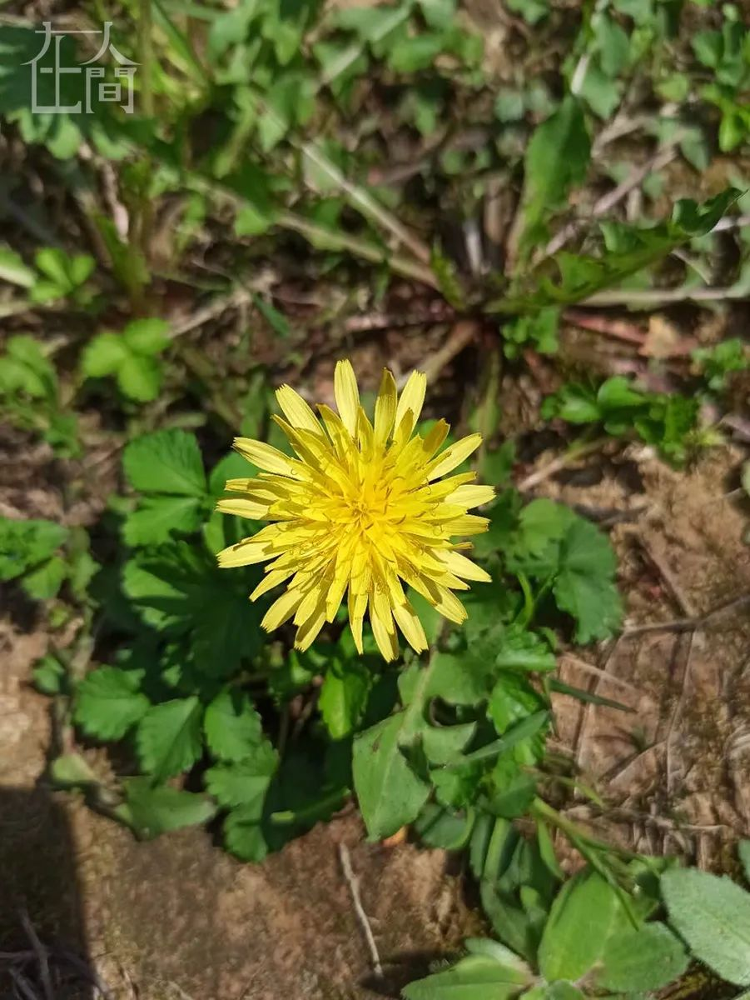
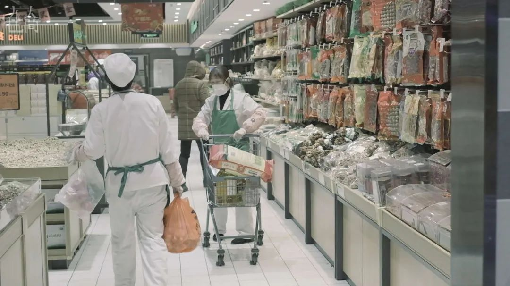
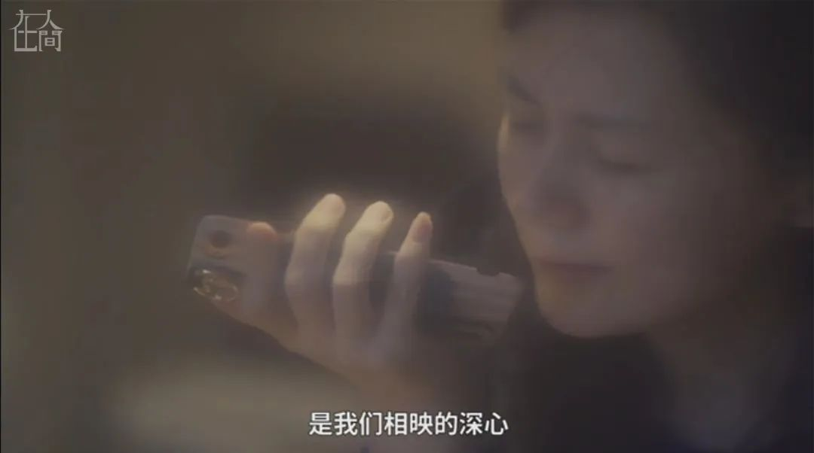

这些有名有姓的护士姐妹，在武汉以命相拼
原文链接 备份链接 尤其在最初仓皇无措的阶段，女性群体居多的一线护士站在了最前方，迎接急风骤雨，撑起最初的希望 文 |《财经》记者 刘以秦 陈亮 信娜 王小 编辑 | 谢丽容 又到一年一度3月8日国际妇女节，对中国所有女性，特别是一直坚 …


凤凰新闻客户端 凤凰网在人间工作室出品
打开凤凰新闻客户端，搜索「在人间」并关注
今天，是武汉封城两个月的日子。两个月以来，武汉900万人民经历了人生中最难忘的日子。这些日子将留存在一座城市的记忆之中，永不磨灭。在巨大的灾难之中，有一些人，他们没有被病毒吓到，没有因为疫情而退缩，无论是否身在武汉，他们都以自己的方式，给这座城市以关爱，给这座城市中的人们以信心。是他们，陪武汉一起走过。春天已来，解封的日子还会远吗？（本期为东风Honda特约）：
以下为护士冯佰仟、志愿者童亚圣、心理咨询师刘洋的口述：

我是冯佰仟，今年31岁，吉林延边人。
我是在湖北荆州上的大学，护理专业毕业后，去了武汉同济医院实习，一年半以后转正，成为了这座城市的一名普通护士。
今年是我工作的第十年，工作内容主要是给肾功能不全的病人做血液透析。武汉同济医院血液净化中心一共配备了2名医生，1名护士长，7名护士。

今年1月中旬，医院通知我们中心的一位医生同时去发热门诊值班，在血液净化中心和发热门诊两头跑。这意味着医生紧缺，也是我第一次意识到疫情的不同寻常。
我心里有些怕。毕竟，对自己完全没把握的未知事物，人总会有些恐惧的情绪。
1月23日（腊月二十九），那位在发热门诊值班的医生发烧了，人手不够，需要我立即顶上。考虑到家里有4岁的女儿，还有两位老人，为了保证家人的安全，我短时间内是没法回家了。
朋友劝我说，认识的医护有直接不干了、转行的。
我是不是也该考虑一下辞职？
但我真的做不到。如果每个人都跑，人跑光了该怎么办？这是我的底线。
我收拾了贴身衣物和一些厚衣服去医院了。临走前我只和妈妈说，可能会在医院住几天。
1月27日（年初三）开始，同济医院附近的湖北省人民医院分院被征为专门收发热病人的医院，这家医院的近60名需要血液透析的病患就转到了我们的血液净化中心。与此同时，同济医院中法新城院区的1名护士长和6名护士合并过来和我们并肩工作。
从那时开始，我所在的血液净化中心一共有2名护士长、13名护士。随后几天，中心又陆续接受了其他医院合并过来的病人，我们这个只有20台血液透析机器的小透析室，总共接纳了超过160名肾功能不全的病患。

■ 有一天忘记贴鼻贴，穿防护服时把自己的鼻子压破了皮。
肾脏是人体最重要的器官之一，一旦没有按时透析，很可能出现各种严重症状，甚至危及生命。这些透析患者根本离不了医院。因此，在疫情前期医疗救助团队还没有赶到时，就算是人手紧张，我们也只能拼了，没有休息。
在此期间，血液净化中心也时不时会有病人发热。
我不记得这里第一例发热病人的具体日期了。只记得那是个晚上，我们快下班的时间点，一位年过四十的病人匆匆赶来。他来了以后就说自己身体不舒服，我们猜测也许是肾功能的问题导致身体中有积水，有些心衰。
他喘。
虽然平时就有呼吸不正常的症状，再加上有鼾症，每次血液透析他都需要吸氧才能完成。但是，护士长还是让他去拍个胸片看一下情况。
胸片的结果需要等1到2个小时才能出来。我觉得自己好像很紧张，就一直守着电脑等看他的胸片。
“护士长你快看，他那个肺上已经有了。”他胸片上显示有白肺。
那时血液净化中心承担的只是普通病患的治疗，这一百多号病人原本抵抗力就很差，一旦被传染，后果不堪设想。
另外，如果我们这里普通患者没有保住，都转去新冠定点医院。定点医院可能都收不下，也会造成很大的麻烦。
我第一次意识到，这是一场“战争”。
大约在1月份的最后两天，血液净化中心的护士长倒下了，住进医院。
2月1日（年初八），护士长让大家都去做新冠病毒筛查，有几位医护人员都中招了。
我自己反而没有那么惊慌了。我意识到，这就是我的工作，可能会有高风险，但我比普通人知道的总要多一些。
我还是没能逃过。集体筛查的两天后，我发现自己有些不对劲。
2月4日午休时，我睡在拼起来的凳子上，凳子的位置恰好在两扇相对的通风窗之间。醒来发现，我有些冷、有些头疼。护士长立刻让我休息。
洗完热水澡，我还是觉得冷。
我发烧了，38.8度。
接下来的两天我的头昏昏沉沉，还拉肚子。
第三天，烧退了。但我还是去医院拍了胸片、验了血。为了避免接触传染，我自己给自己抽血，手都在抖。医生问我紧张吗，我就回头笑：“我要说不紧张，你信吗？”
核酸检测阴性，但肺部和血液检查结果都有问题，按照之后的标准来看，已经可以确诊感染。当时医疗资源特别紧张，我的症状又比较轻，就自行回到宿舍隔离休息，每天按时吃药。
直到2月下旬，我都没有出过宿舍的门。

■ 我的宿舍洗手间。
隔离的日子很漫长。同事们每天都会把饭挂在我的门把手上，等他们走了，我就开门去取。
隔离一个星期后，我有时晚上会感觉胸口像压了块石头，但我没有太当回事，每天都会喝大量热水，捏着鼻子喝下有鱼腥草味道的中成药。
慢慢地，我好起来了。
到现在为止，我还不敢告诉爸妈自己的这段患病经历。我是独生子女，怕他们担心。隔离期间，每天晚上和他们视频时，我都会装作自己今天工作了一天，很累的样子。有一天晚上，妈妈问我：“你怎么和别人的脸不一样？别的医护人员因为戴口罩都把自己脸给勒坏了，你怎么没有？”
我当时被问得有些蒙，但是马上回答说：“勒的印子一直都有啊，只是下午休息睡了一会儿就没啦。”
面对家人的担心，我会选择撒个小谎。妈妈总叫我和病人少接触，远远地看着就好。每天视频都会和我说上一两个小时。我就回答她：“你放心！我肯定没事儿！”说这话的时候，心里好虚。

2月底，我觉得自己完全恢复了， 就加入了拯救危重病人的一线团队，“护肾小队”。
这个小队成立的目的，是用血液净化的技术来阻断病人体内由于新型冠状病毒引起的炎症风暴，除此之外，还需要收治肾功能不全患者感染病毒后转成的危重病人。
当时武汉的疫情正值最紧张的时期，危重病人多，很缺医护人员，在我加入之前，“护肾小队”已经连续工作了十多天。我就决定既然已经恢复了，那就干脆上一线吧。
从那时起，我每天早晨七点多会从光谷院区开车去中法新城院区。吃完早饭，我和同事们会戴两层口罩、戴眼罩，戴帽子把两只耳朵都遮住，穿上三层防护服。防护服不透气，让人感觉五感缺失，行动不方便，说话声音也嗡嗡作响，一穿上防护服我就会开始出汗，觉得又累又闷热。

■ ICU内护士的日常工作。摄影：李隽辉
上午9点30分，我们会过五道门进入污染区的ICU内，每一道门、每一个缓冲区对我来说似乎都有一种无形的压力。我的工作是密切关注危重病人的生命体征，随时记录仪器运转情况，关注用药病人的体温等。为了保证工作时间，一般到下午4点左右，我才能从ICU出来和同事交接。
虽然一开始会有些压力，但习惯了以后，我感觉这个流程跟正常上班别无二致。只要防护到位，不暴露，也并没有什么问题。
我想心态上接纳工作内容的主要原因之一，是因为成就感。

■ 在ICU内，“护肾小队”在做血液净化前的准备工作。摄影：李隽辉
我遇到过最年轻的危重病人是44岁，病情非常惊险，但最后经过全力救治，也能化险为夷。他起初是上了ECMO（俗称“人工肺”），后来又用CRT（心脏再同步治疗）抢救，插上呼吸机。好转后，刚刚脱机的那天，血氧饱和度又突然下降，于是又重新插上了呼吸机、上ECMO、做CRT，紧接着又做了一轮。最后好了，终于搬出了ICU区。
还记得光谷院区ICU有一位86岁的老太太，她第一次做插管和CRT治疗是我去处理的。她用了很多药、用了镇静剂，整个人处于昏迷状态，还带着呼吸机。连续做了几次后，又轮到我的班，我发现她已经醒了，虽然身上管子很多，不能开口说话，但和她说话，能够通过点头、摇头来回应。她都已经86岁了，我眼看着那些输液泵撤下去许多，慢慢好转的样子，我就觉得自己没有白干。
3月开始，医疗救援队都陆陆续续就位，“护肾小队”的人员目前也已经超过30人。我们排开了班后，就有休息时间了。

■ 三八妇女节当天中午，同事的丈夫给血液净化中心的医护人员送花、水果、食物。
在疫情比较严重的时候，我看到很多医护人员在防护服上写下自己喜欢的明星的名字，拍下照片，在微博上@他们。我们病房里也能经常见到，觉得很解压。本来我也想写的，我喜欢朱一龙。但是我想让别人帮我画点什么的时候，她们说：“别为难我了，我不会画。”

■ 在往来宿舍和医院的路上拍摄的野花。
下了班以后，我喜欢去光谷院区逛逛，因为院区里有个“吉祥物”，是只小猫咪。我喜欢和它玩一会儿，给它喂水喂食，上下班路上的花儿和猫都挺治愈。
情况慢慢在变好，但我还是会想念我的女儿，她4岁，调皮捣蛋。和她视频的时候，我对她说，想捏捏她的脸，抱抱她。她问我：“你为什么不回家呀？你住在哪里呀？我也好想去住你那里呀！”
我就回答她：“妈妈在和病毒打仗，等我们把病毒都消灭了，我就可以回家跟你一起住啦！”
我是冯佰仟，忠于职守，守护一座城，我是“武汉分之一”。

我叫童亚圣，湖北天门人，1990年生。
从上大学开始，我就一直待在武汉，干过很多工作，后来成了一个视频博主，记录疫情下的武汉，以及奋战在一线的医护人员。
1月23日凌晨，武汉公布了上午10点即将封城的消息。中午，我准备开车去黄石，跟家人汇合后回天门过年。路上有许多警车，很多车辆排队做体温检测。除此之外，还有很多人在雨中步行，都想离开武汉。这种场景特别魔幻，带给我比较大的心理冲击，我从没想过这座城市会突然变得这样陌生。
那时我才真正意识到，疫情不太妙。我害怕万一自己携带了病毒回家该怎么办，于是，我给姐姐打了电话说，不回去了。240公里的路程，我开了一半，就决定返程。
我选择留守武汉。
回去以后，我打开冰箱，空的。为了回家过年，临行前，我连最后一个鸡蛋都已经吃完了。只剩下几包泡面。幸好，我认识的一个租客是卖菜的，我就去问他买了特别多的菜。
这是我人生中第一次独自一人过大年三十。
原本我打算做两菜一汤的，但我的粉丝在群里说：这样不行，两菜一汤太简单，要做八个菜。于是我强行做了包括水果拼盘在内的八个菜。做完以后很累，而且都不怎么想吃了。直到看春晚时，我都还有一种特别不真实的感觉。

■ 1月28日，我去超市购物。
1月30日，我的视频合作伙伴霍霍来找我，说有个地方需要运送医疗物资。我一秒钟就答应下来了。
仙桃是整个湖北的医疗物资生产基地，这次的任务是去那里把2000套防护服运到武汉，分发到四个医院。因为对接的两方面都给我们开具了证明和资质，在路上检疫过关卡时比较顺利。
这是封城以后我们第一次出城，也是我离家人最近的一次，湖北天门和仙桃互相挨着。家里人发消息问我，离这么近，要不回家来看一下？我说不行，因为现在是特殊时期。
1月31日，我们按照约定开车将物资送达武汉第四医院。路过发热门诊时看到的那里站着、坐着二、三十位老人，拿着病例一句话都不说。这场景我至今无法忘记。
到了办公楼后，我们打电话给对接物资的医生，进行防护服交接。过程中，我们看见一些穿着防护服、没穿防护服的人在医院来回走，垃圾桶里全是用过的口罩。
过去听到的疫情可能是一串数字，但是真正目睹这些真实场景的时候，心理冲击挺大的。这让我觉得本能地害怕，忍不住开始担心自己。
但我没有因为害怕就不做这件事情了。接下来和我们对接物资的医生，让我十分受触动。这是位看起来50岁左右的老医生，看到我们把物资送来后，他不停地对我们说感谢 ，说我们是好人，帮了大忙，差点儿跪下来。
当时，我们只送了500件防护服给这个医院，可见当时医疗物资有多么匮乏。这样的场景出现在我们的意料之外，我惊呆了，从没想过自己能给别人这么大的帮助，眼泪都有些收不住。
送完防护服后，休息了一天，紧接着我们又继续开始运送其他的医疗物资，比如酒精。我们开着自己的车，并且联系了货车，对接了江苏南京送来武汉的12吨酒精，接到酒精后，运送至武汉江夏区疾病防控中心。运送酒精的朋友基本都是90后，当时武汉没有宾馆营业，他们只能住在车里，我跟霍霍就一起给他们煮了点儿水饺吃。看到他们狼吞虎咽的样子，我们内心的感激无以言表。他们顶着被隔离14天的压力，开了800公里的车。
2月5日，我们又从仙桃载着600套防护服送往孝感。孝感当时是除了武汉之外，疫情最严重的地区，进入孝感后，我们检测了十多次体温，几乎每五分钟就要下车登记一次。
在孝感的医院，我能看到的所有人几乎都没穿防护服、没戴护目镜。甚至有医生用胶带把白大褂的领口黏住，或者多穿两层手术衣。

■ 2月10日，我（右一）和小伙伴霍霍到达协和医院送400套防护服，与医护人员合照。
我坚持做志愿者还有一个重要原因——这种行为能够影响周围的人，一起参与到救援行动当中。
我有一个经济条件不错的朋友，跟我说也想做点事，可因为父亲病重，没有太多的精力。于是他从国外买了口罩、从仙桃买了酒精，又去超市买了苹果和牛奶，共计几十万元的物资，自己开车送去医院。
还有坐标在安徽的朋友对我说，他也在当地报名了志愿者。
通常，我会把每次运送物资的情况记录在vlog里面，粉丝们会在群里和我互动。
我的一个粉丝是护士，她有一次向我求助，让我帮她买一双36码的女鞋。我问她为什么要买鞋，她说：“我的鞋已经好几天没有干过了。”
原来她是个近距离接触重症病患的护士，需要穿着多层防护服，不允许身体的任何部分接触重症病房的空气。工作久了，防护服又闷又热，整个身体就像在水里泡过一样。
于是除了答应买鞋，我无意中对她说，要不我来记录你们吧？

■ 我镜头下的医护人员，在防护服上画上了自己的名字和喜欢的图。
从那时起，我就决定用拍视频的方式记录他们的工作，一个人包揽了拍摄、采访、剪辑、文案、配音的所有工作。
有一次拍视频时，湖北省中医院的污染区和半污染区之间连隔离的帘子都还没有，从1楼到6楼甚至没有标准的医疗区域划分。更多的是在地上画一条线，这叫心理隔离。
视频剪辑出来后，我问过护士，这样的记录有意义吗？她回答说，许多护士们看到这个视频都会流眼泪。
我拍摄的第二个护士，是在父亲病重的情况下，仍然选择来支援一线。她的父亲是个既严肃又慈爱的人。她念初中时，父亲从很远的地方来接她，三年如一日。
在支援武汉的日子里，有一天，母亲来电话，通知她父亲快要不行了。她从医院开了证明，原本可以回家的，但她最后还是没有回去，因为害怕把病毒传给家人。
也有护士会在镜头前和我讲述一些特殊病患的情况。一名护士照顾过一位80岁的老奶奶，有三个子女。当时奶奶感染病毒时，武汉还没有封城，她特别希望家里人能来探望，就算是在窗户边打个招呼也可以。她只希望见上一面。
但所有的子女都拒绝了，还骗她说，是因为医院禁止探视。老奶奶心情坏透了，会在住院时砸东西、拔尿管。护士说她非常理解老奶奶的心情，从来没有带负面情绪照顾她。
另一位拍摄对象，可能是全国年龄最小的感染病毒的护士，1997年生。有一天，她突然把自己的微信头像换成了全黑色。我问她怎么了，她回答说心情不太好，因为核酸检测呈阳性。事实上，她是个特别乐观开朗的小女孩，支援工作时也无所畏惧。
我想，小女孩都不害怕，我又怕什么呢？做任何事都有风险的，但总有人需要站出来。
我是童亚圣，不畏风险，敢于担当，我是“武汉分之一”。

我是刘洋，生于1981年，生活在上海。
作为一名电台主持人兼心理咨询师，新冠疫情发生以来，我接了很多个电话，它们来自全国各地，武汉的最多。每一个电话背后的声音都是那样真实。听着那些悲欢离合的故事，我内心对生命油然而生出一种更深的敬畏感。

■ 我在单位办公室。摄影：吴军

3月11日，一个来自武汉的电话让我震撼。
晚上11点，他打进电话，语速特别快。
这是他在家隔离的第48天。前期，他一直有症状，多次去医院做检测，每次都要排7个小时以上的队，最终确诊。他说有人跑了七、八家医院，都没有被收治。
他爸爸是肝癌晚期患者，同时感染了新冠肺炎，早期医院没有床位，爸爸就在家里，每天半夜都会起来，妈妈不眠不休、整夜地陪着爸爸 ，也不怕被感染。
他既心疼又难过。他们家是回族，人死了之后不能火葬，必须土葬，这是传统。但是，在那种情况下，人去世了必须要火葬。他爸爸非常恐惧，他就说：“爸你放心，万一有什么事情，我就把你背回去。我就是死也要把你扛回去，扛进土里去。”
好在，武汉政府下达了“应收尽收、应治尽治”的政策，他们陆续得到了有效治疗。三口人都已出院，正在家里慢慢康复。
在自己和父母的求医过程中，他看到“太多的悲欢离合。”那时，每天都有很多新增病例，他看不到头，抱怨、愤怒、焦虑，各种负面情绪袭来。
他每天强迫自己消毒，甚至怀疑是否需要吃一些精神类的药物。
他不敢跟别人倾诉，害怕别人觉得他矫情，因为毕竟他的家人都完好。而武汉有些家庭，可能几口人都不在了。
他把心里话一股脑说出来之后，自己平复了一下。
我一直在听他倾诉，直到他平静下来。我告诉他，究竟是什么让他们一家人过了新冠肺炎这一关？这就是背后的那份爱。他们无形当中启动了一份伟大的力量，那是爱的力量。
我让他重新来看待这些事，引导他在心底先跟父母把这份情连起来，把他的爱流动出来给爸爸。开始时他说不出来“爸爸我爱你”，他不习惯这样的表达。慢慢地，他去体会和感受。然后，他说自己重新连上这份情了，原来可以通过爱的流动来抵达对方的生命。如果没有疫情，他说自己可能永远都不会发现有多么爱家人。
他又扩展开来，家里人相继被感染后，他只知道抱怨医生、社区工作人员，抱怨这个世道为什么这么不公平。现在，重新看待这一切，他知道大家都需要这样来流动爱。他要把他的爱流动给所有的家人、医护人员、社区工作者，所有他能够接触到的人。
他说，整个武汉，真的都太需要流动爱了。

六年前，我成为了一家心理关爱中心的志愿者。1月30日，中心成立了一条心理支持热线。我也是从那天开始接电话的。
我们在社交媒体平台上留下不同接线员的手机号、微信、固定电话，当求助者打电话来的时候，接线员再把求助者发给当时值班的心理咨询师志愿者。
2月2号，在心理热线的基础上，我们又成立了一个生命关爱特别小组。这个小组的志愿者主动打电话给求助者、特别是武汉的求助者，提供心理帮助。
我本身就是一个心理咨询师，又做了多年志愿者，当这个全国乃至全球性的公共卫生事件发生的时候，我希望自己能够为此做些什么。虽然我不能冲到前线去，但我可以力所能及地做些有用的事，这一点责无旁贷。
我们心理支持热线由43位心理咨询师轮班值守24小时，每一个班是3个小时，有2到3位咨询师。

■ 我在值班中（视频截图）。
我的值班时间一般是上午11点到下午2点，有时也有夜里，从11点到凌晨2点。这些时间正好错开我的上班时间。下班到家后，身体上可能会累，但是精神上一点也不疲倦，一旦进入接线状态，整个人就精力充沛了。
我一般都是在家里接电话。凌晨值班时，丈夫会在旁边陪我。他不会刻意做些什么，就在旁边忙他自己的事，给我力量。我的女儿也会陪着我，有时候她躺在我腿上睡着了，等到值班结束，我再把她抱回床上。
大部分打来电话的人的情绪都是恐惧和焦虑的。但是每个人恐惧和焦虑的又是不一样的东西。
一个母亲，她的儿子只有3岁，得了白血病，之前经历了7次化疗，25次放疗，还需要很多次这样的治疗才能慢慢好起来。但是现在，治疗因为疫情原因被耽误了。她很怕，本来已经好转了，现在这样，接下去怎么办？
我之前觉得，这个孩子应该是安静地躺在床上。但是在电话里，我听见那个孩子声音非常洪亮，在旁边和姐姐打闹玩耍。
我就问，是这个孩子吗？她说是的，这孩子特别调皮，他第一次做化疗之后蔫了一阵子，后来好像他就适应了，特别调皮，特别活泼，医生都觉得，这个孩子他真的得了病吗？
我体会到，这个孩子有一种非常强烈的要好起来的愿望。我也引领这个妈妈跟她的孩子来流动爱，告诉宝贝，妈妈爱你，妈妈相信你，你一定会好起来的。
这个妈妈说，之前那么长时间她一直都特别焦虑，根本安定不下来，跟我咨询之后，她感到平静了。
我们的生命关爱小组主动打到武汉的电话比较多。疫情风暴中心的人，他们的情绪变化有一个曲线。
开始时，一床难求，他们的情绪中有一种绝望感。我们那个时候打电话过去，就是渴望穿过这份绝望，找到背后的那份希望，让他们可以看到一道光，挺过那段艰难的时间。
等到方舱医院建好，重症病人住进定点医院，轻症患者住进方舱医院，疑似病人进入集中隔离点儿，“应收尽收、应治尽治”，武汉人的情绪慢慢有了变化。
到现在，武汉人的情绪好了很多，我们收集到的求助信息也比之前要少。
还有不止一个求助者，说自己有咳嗽、胸闷等症状，担心自己是不是也被感染了。我跟他们沟通下来感觉，他们很多都是受过往经历的影响。比如有的求助者在他刚刚成年的时候，父亲就去世了。疫情深深勾连到了他的过往。
我会引导这些求助者，即便是有亲人去世了，但爱比死大。
疫情过后，那些失去亲人的人们、重症救治过来的患者，可能需要比较长的时间来进行心理修复。创伤的经历，对于每一个人来说，都是很艰难的时光，需要危机干预和哀伤辅导。我很希望他们可以主动寻求各种各样的机会求助。
很多人会回过头来看痛苦和失去。实际上，我们要想到，爱比死大。你的家人、朋友，表面上是以后见不到了，但他们的爱都深深地存在你心里，在你的生命里。你需要在内心深处把这份情连起来，带一份爱活出两个人、三个人、更多人爱的模样来。这才是失去的真正意义。
我希望告诉所有的人，在这样一个巨大的风浪中，爱是唯一的救赎指导。
热线我们会一直开下去。从3月11号开始，我们已经把热线升级为全球中文服务，向全球华人提供咨询服务。
我是刘洋，无法相拥，却离你最近，让爱流动起来，我是“武汉分之一”。

感谢冯佰仟，感谢童亚圣，感谢刘洋，感谢千千万万个在疫情期间帮助过武汉的平凡个体。在你们身上，我们看到了勇敢和担当，看到了迎难而上的精神，这也是东风Honda的追求。
东风Honda也是“武汉分之一”。谢谢拐子们滴抬庄！
更多疫情故事，请点击左下角「阅读原文」。


征稿
2020年的开端，注定是全人类记忆中无法抹去的一笔。
《在人间》现面向全球网友征集疫区日记
请你用照片（or视频）和文字
记录你所经历的一切
投稿方式：微信联系人间君（zairenjianliving）

原文链接 备份链接 尤其在最初仓皇无措的阶段，女性群体居多的一线护士站在了最前方，迎接急风骤雨，撑起最初的希望 文 |《财经》记者 刘以秦 陈亮 信娜 王小 编辑 | 谢丽容 又到一年一度3月8日国际妇女节，对中国所有女性，特别是一直坚 …
原文链接 备份链接 文/六筒 李岩半年前刚去过武汉，和家人去旅游，主要想看看黄鹤楼。那还是夏天，热气蒸得人头上冒烟。高温挡不住蜂拥的游客，摩肩接踵，拥塞的车辆在大道上艰难挪动。“真是个大都市”，她想。 李岩是河北医科大学第二医院呼吸与危重 …
原文链接 备份链接 澎湃新闻综合报道 新冠疫情发生以来，为了方便沟通交流，医护人员在背后写上名字，互相打气。 这些防护服上的字，如无声的誓词。 我们虽然看不见你们的脸庞，却从这些字里看到了希望。 “此行是为救治病人，不达目的不撤兵”——她 …
原文链接 备份链接 “湖北和武汉医疗救治、社区防控和后续工作任务依然艰巨繁重，其他地区人员流动和聚集增加带来疫情反弹风险依然存在。”唯有继续加大防控和排查力度，才有可能避免新冠肺炎疫情再次局部暴发 3月18日，武汉协和医院心外科候诊区，医 …
原文链接 备份链接 我是记者郭静。 郝丹是我的同行，但此前并不认识。知道他，是因为他上了《焦点访谈》。采访他那天，他心情本来并不好。因为上了《焦点访谈》，有部分小区居民公开排斥他，其实他早已痊愈出院，居家隔离也已超过14天，而且，他出院第 …